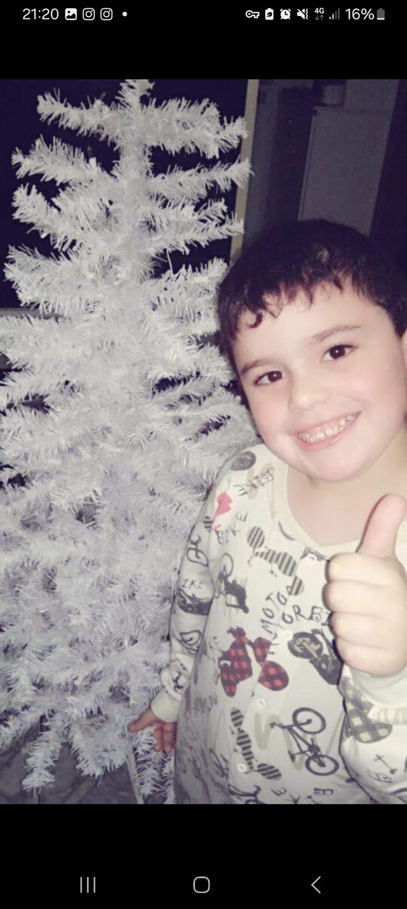
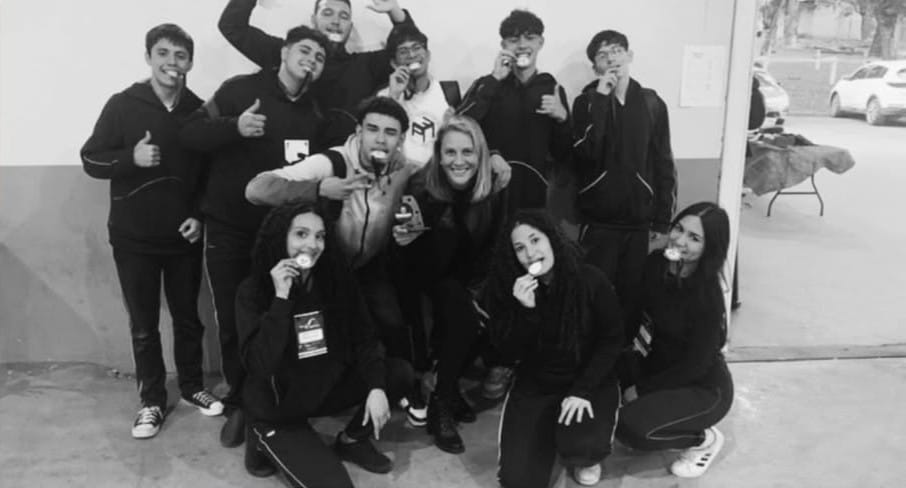

Algumas histórias começam muito antes da primeira aula.
Minha trajetória escolar foi feita de fases diferentes. Algumas lembranças estão registradas em fotografias; outras continuam guardadas na memória, nas conversas e nas pessoas que fizeram parte do caminho.
CAPÍTULO 01 · MINHA TRAJETÓRIA
O caminho até aqui.
Uma linha do tempo de mudanças, encontros e momentos que ajudaram a construir minha história.
01
ANTES DA ESCOLA
Antes mesmo de começar...
Algumas das primeiras fotografias que guardo são de antes de entrar na escola. Também existe uma história curiosa dessa época: quebrei o braço ainda na infância, antes de começar minha trajetória escolar.
Uma lembrança dos primeiros anos

Um registro dessa épocaA famosa história do braço quebradoUma hora antes de entrar na escola
02
ENSINO FUNDAMENTAL
Entre brincadeiras e novas amizades
Durante o Ensino Fundamental, eu gostava bastante de brincar e conversar. Apesar disso, sempre fui um pouco tímido e tinha poucas amizades. Muitas vezes, tentava me aproximar de outras pessoas e fazer novos amigos, porque não gostava de ficar sozinho. Aos poucos, fui vivendo experiências e construindo lembranças dessa etapa.
“Eu gostava de brincar e conversar, mas também era muito tímido.”
03
1º ANO DO ENSINO MÉDIO
Um mundo novo
O início do Ensino Médio trouxe muitas novidades: uma escola nova, pessoas que eu ainda não conhecia e a oportunidade de construir novas amizades. Tudo parecia diferente, e foi um período de adaptação a essa nova etapa.
Algumas amizades fizeram parte daquele primeiro ano e seguiram caminhos diferentes. Outras permaneceram. Erick, Thayson e Enzo continuam presentes até hoje e são parte importante das lembranças que levo dessa fase.
04
2º ANO DO ENSINO MÉDIO
Novas pessoas, novas experiências
No segundo ano, conheci novas pessoas, fiz novas amizades e vivi experiências diferentes. Nathan, Fernanda e Geovana foram algumas das pessoas legais que conheci nessa fase.
✳
UMA CONQUISTA DA TURMA3º lugar no campeonato de robótica
Uma experiência divertida e uma conquista que ficou entre as boas lembranças daquele ano.

OBR 2025 · a conquista da turma
Também guardo com carinho as aulas de recomposição de Matemática com a professora Francismara, que era muito legal e tornou aqueles momentos mais agradáveis.
05
3º ANO DO ENSINO MÉDIO
Entre risadas e despedidas
Confesso que o último ano está sendo cansativo. Acho que todos já sentem um pouco o peso de chegar ao fim dessa jornada. Mesmo assim, foi o ano em que mais dei risadas, com certeza, principalmente ao lado do meu grupo de amigos da sala: Thayson, Enzo, Skimo (Luís), Benjamim, Hiago, Tavares e Erick (menção honrosa para a Fernanda, Giulia e Geovana).
Entre conversas, brincadeiras e situações que provavelmente só nós entendemos, construímos lembranças que vou levar comigo muito além dos portões da escola.
Risadas e lembranças do último ano
“Às vezes, os momentos mais simples acabam se tornando os mais especiais.”
UM DIA DIFERENTE
Trabalho de Química na casa do Thayson
Este ano, fui à casa do Thayson com Erick e Enzo para fazer um trabalho de Química. O que poderia ser apenas mais uma atividade escolar acabou sendo um momento muito legal, resenhamos, estragamos, bagunçamos, escutamos e cozinhamos, mas o trabalho foi feito
AS PESSOAS TAMBÉM FAZEM A HISTÓRIA
Algumas amizades ficam pelo caminho.
Outras continuam fazendo parte dos dias, das risadas e das lembranças. Erick, Thayson, Enzo e Luís (Skimo), Benjamim, Fernanda, Geovana, Giulia, Hiago(o goat) e Tavarão são nomes que aparecem com carinho neste capítulo final da vida escolar.
✳
CAPÍTULO 02 · PORTFÓLIO
Palavras que construí.
Textos produzidos durante as aulas de Língua Portuguesa e Redação. Cada tema representa uma ideia, uma reflexão e uma parte do percurso.
17 textos
Nenhuma redação encontrada. Tente outro termo.
ÚLTIMO CAPÍTULO · 2026
O fim de um ciclo, o começo de outros caminhos.
É estranho pensar que uma etapa que fez parte de tantos anos da minha vida está chegando ao fim. Sinto um pouco de tudo: felicidade por concluir essa jornada, alívio por superar os desafios, ansiedade pelo futuro e, principalmente, saudade de tudo aquilo que talvez não aconteça novamente.
Foram anos de mudanças, aprendizados, amizades, dificuldades e muitas risadas. Talvez eu não tenha aproveitado todos os momentos como poderia, mas cada fase contribuiu de alguma maneira para quem sou hoje.
No final, ficam as fotografias, as histórias e as pessoas que fizeram parte dessa caminhada. A escola pode estar ficando para trás, mas as lembranças continuarão comigo.